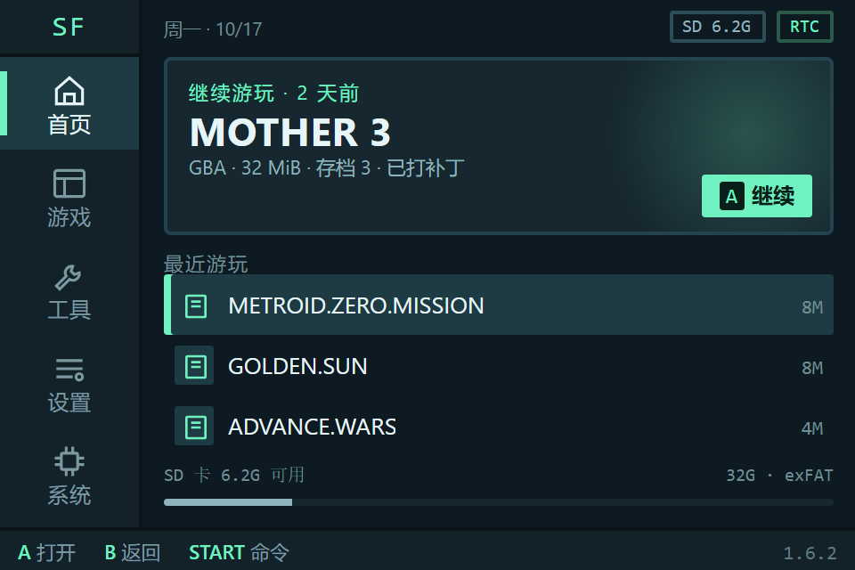
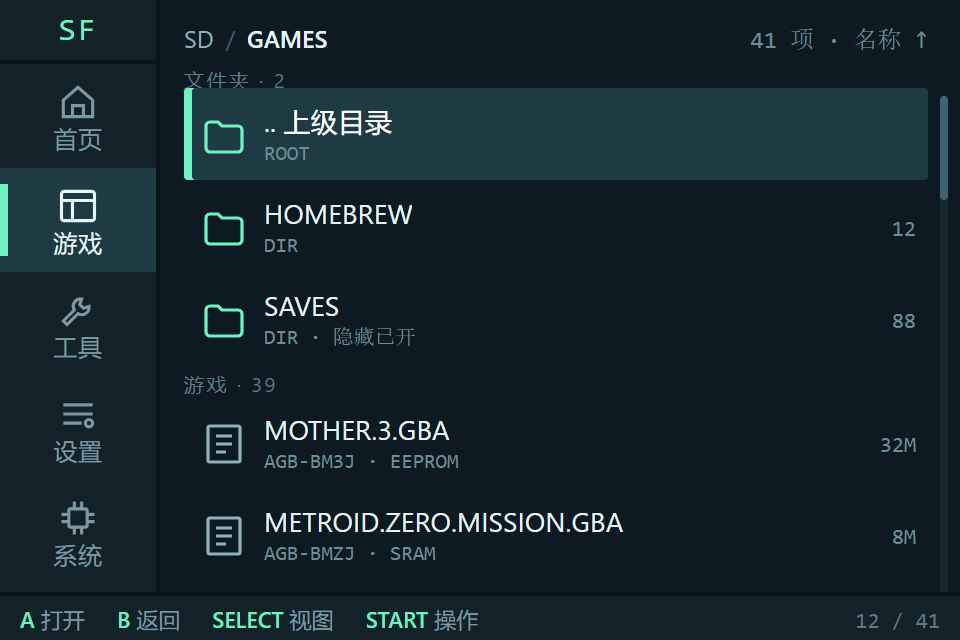
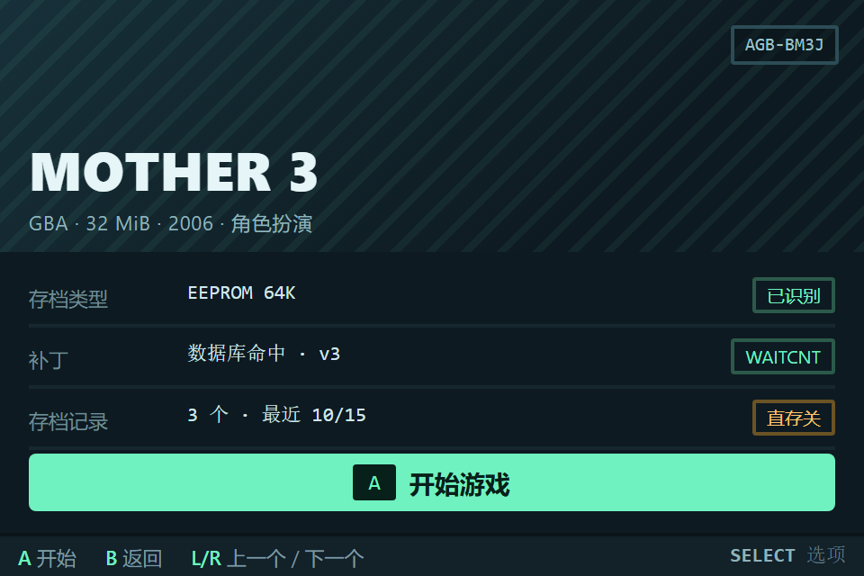
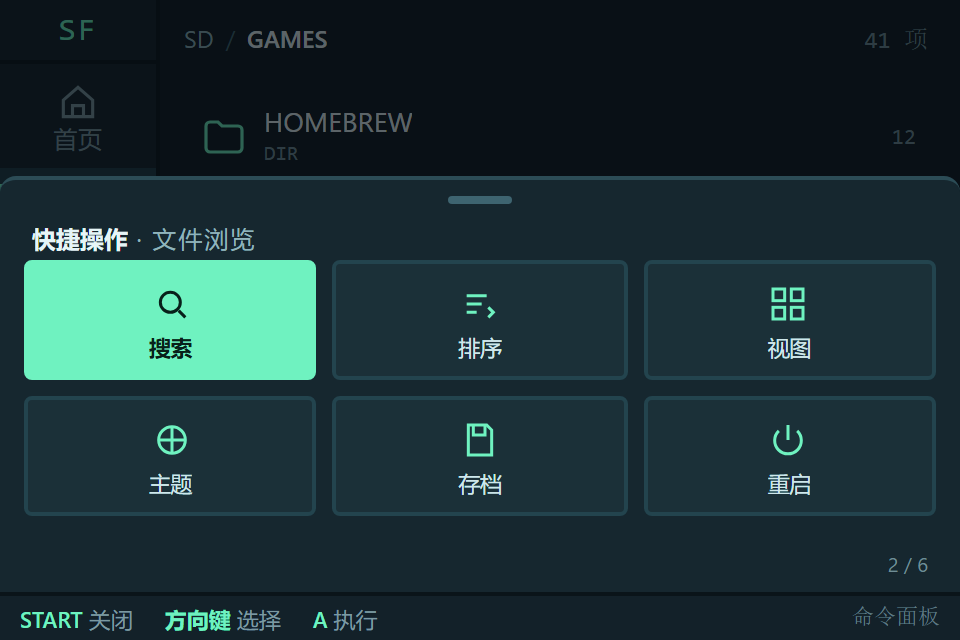
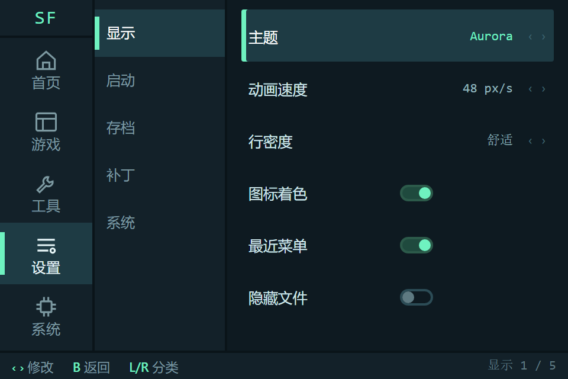
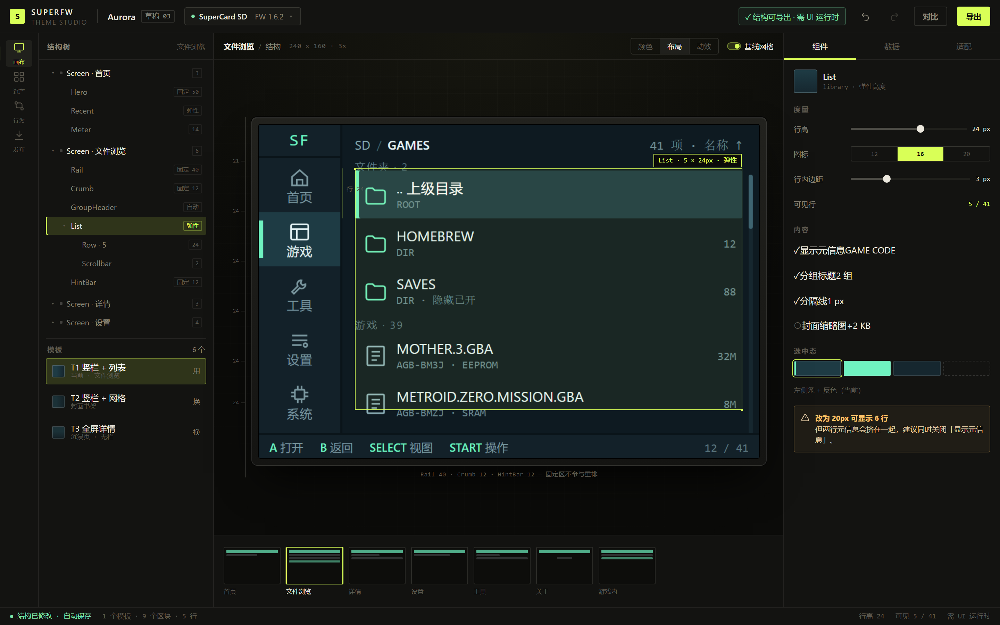

上一版只改了皮。这一版改骨架。
如果主题仍然只是 themes[6][6] 那张颜色表，那这个工具的天花板就是"换配色 + 换图标"。要让主题真的能改变操作逻辑与布局，必须先把固件里写死的坐标变成可编排的数据——然后再谈编辑器。
先把上一版的问题说清楚
对，而且原因是结构性的，不是做得不够多。
我上一版设计的是工具的新交互，固件那侧一点没动：菜单还是 7 个横排标签、16px 行高、A 进 B 出、弹窗盖在上面。所谓"主题"在代码里就是六个 uint16_t，所以无论编辑器做得多花，产物都只能换颜色和图标。
| 层面 | 现在 | 能否被"主题"改变 |
|---|---|---|
| 颜色 | themes[6][6] | 可以 |
| 图标 / 字库 | icons.h / fonts.pack | 可以（编译期） |
| 行高 / 栏宽 / 留白 | render_browser() 里的常量 | 不能 |
| 导航结构（标签顺序 / 层级） | menu_tab 枚举 + L/R | 不能 |
| 交互（弹窗 vs 页面 / 快捷键） | popup_windows[] 分发表 | 不能 |
| 信息密度（每行显示什么） | draw_text_ovf 调用点 | 不能 |
下面四行就是"只能改基础"的根因：布局不是一个对象，而是散落在 menu.c 三千行里的立即数。要改布局，先得让布局成为一个可以被读写的对象。
240×160、8×16 字形、16×16 图标、BGR555。硬件决定，不可变。
Rail / List / Row / Hero / Sheet 的位置、尺寸、密度、绑定。这一层现在写死在 C 里。
去哪、怎么回、START 做什么。现在是枚举 + switch，也应该变成数据。
先算账：GBA 还剩多少余量
在 16.78 MHz、96KB VRAM、256KB EWRAM 的机器上谈"可编排 UI"，必须先证明放得下。按现有代码的分配方式粗算：
| 资源 | 现状占用 | 新增 | 结论 |
|---|---|---|---|
| VRAM | Mode4 双缓冲 76.8 KB / 96 KB | 0（复用同一帧缓冲） | 无压力 |
| ROM | 256 / 496 / 512 KB 三档 | +2.5 ~ 3.5 KB 代码 | 可接受 |
| RAM | IWRAM 32 KB / EWRAM 256 KB | +0.6 KB 运行时状态 | 可接受 |
| 描述数据 | — | 1.2 KB / 主题（放 ROM 或 SD） | Lite 版需裁剪 |
| CPU | 整屏 38.4 KB 重绘已是每帧成本 | 布局只在切屏时算，~2–3k cycles | 不进热路径 |
估算口径：布局解释器按 6 个原语（Rail / List / Grid / Hero / Sheet / Hint）、每屏 ~20 个节点、每节点 ~24 字节描述计算；实际值需在 P1 阶段用 --print-memory-usage 校准。
新导航模型：竖栏 + 页面栈 + 命令面板
三条规则
1. 场所（Place）与层级（Stack）分离。竖栏切换"我在哪一类事"，B 键只在页面栈里回退。以前 L/R 既翻标签又翻页，用户永远不知道会翻到哪；现在两个维度各归其位。
2. 弹窗降级为两种。需要决策的（删除确认）用确认页；不需要决策的（排序/视图/主题）用 START 命令面板。消灭"弹窗盖弹窗"的栈。
3. 底部提示条随焦点变。"A 打开 · B 返回 · START 操作" 只在列表页出现；进详情后变成 "A 开始 · SELECT 选项"。按键教学不再依赖说明书。
| 操作 | 旧 | 新 |
|---|---|---|
| 切换分区 | L / R 循环 7 个标签 | 方向键在 5 个场所间二维移动 |
| 返回 | B：退弹窗 / 退目录 / 退标签（多重语义） | B：只退页面栈；竖栏不参与 |
| 更多操作 | SELECT 打开子菜单弹窗 | START 唤出命令面板（6 个大按钮） |
| 游戏详情 | 弹窗（载入/存档/补丁三个 tab） | 整页详情（封面 + 元信息 + 主操作） |
| 设置 | 一条长列表，5 屏 | 左分类 + 右选项，一屏看到 6 项 |
五张设备稿
按真实像素网格绘制：40px 竖栏、24px 行高、8px 主字号、12px 提示条。可直接作为实现时的像素标注。

把"最近玩过"提到首屏：一张大卡 + 三条最近记录 + 存储条。开机后 A 一次就能继续上次的游戏，不用再穿三层目录。

24px 行高同时容纳名称与元信息（游戏码、存档类型）；分组标题把文件夹与游戏分开；右缘滚动条替代 "12/41" 文本。

封面带 + 三条元信息 + 单一主操作。补丁状态、存档类型、直存开关一眼可见——这些信息以前分散在三个弹窗里。

排序、视图、主题、存档、重启收进一个 2×3 面板。常用操作从"翻到设置页找"变成"随手按 START"。

左侧 5 个分类常驻，右侧 6 行可见；开关与数值内联，左右键直接改。取消"改完再点保存"的两步操作。
五个屏幕全部由 6 个原语拼成：Rail / List / Hero / Sheet / Meta / Hint。换模板只换原语的组合与度量，不换渲染代码——这就是"可编排"的含义。
主题包：从颜色表到界面描述
新格式的关键不是"多存几个字段"，而是把布局描述成数据。六个模板覆盖固件全部界面；主题只能在模板约束内调度量与绑定，避免做出不可用的界面。
// theme.bin（TLV，未知 type 跳过） HEAD magic "SFTH" · ver 2 · target_fw 0x0106 · doc_hash TOKENS color.surface #0E1A21 color.accent #6FF2C0 metric.row_h 24 // 20 / 24 / 28 metric.rail_w 40 // 0 / 32 / 40 style.divider 1px LAYOUT screen "library" → template T1 block Rail { w: metric.rail_w, items: places } block List { row_h: metric.row_h, meta: true, group: true } block Hint { h: 12, dynamic: true } ASSETS icon[] · font_subset[] · logo FALLBACK // 老固件读到这里就停
| 模板 | 用于 | 可调 |
|---|---|---|
| T1 竖栏 + 列表 | 游戏库 / 工具 / 系统 | 行高 20/24/28、元信息开关、分组、选中样式 |
| T2 竖栏 + 网格 | 封面书架（新视图） | 列数 2/3、瓦片尺寸、标题行数 |
| T3 全屏详情 | 游戏详情 / 关于 | 封面高度、元信息条数、主操作文案 |
| T4 底部面板 | 命令面板 / 确认 | 列数、瓦片高度、是否模态 |
| T5 分类 + 选项 | 设置 / 界面 | 分类宽度、每屏行数、值控件类型 |
| T6 仪表 | 首页 | Hero 高度、最近条数、是否显示存储 |
布局描述只允许在这六个模板内组合，不允许任意坐标。这是刻意的：240×160 上一个自由画布布局器必然产出不可用的界面，而"受约束的模板 + 可调度量"能保证任何主题都还能用。
工作台随之升级：从调色板到结构树
工具这边不再只是"选颜色"。画布模式里新增 颜色 / 布局 / 动效 三个子页：布局页给出结构树、固定/弹性标注、组件度量与模板切换，改动实时反映到中间的设备画布。

左侧结构树把"固定的 Rail 40 / Crumb 12 / HintBar 12"与"弹性的 List"分开；右侧改行高 24→20，画布与"可见行 5/41"同时变化，并给出一句人话提醒（元信息会挤）。
为什么不是自由拖拽：设备只有 240×160，一个像素的错位都会让 8px 字形挤在一起。工作台提供的是带约束的编排——换模板、调度量、绑数据源、开关内容块；越界的组合会被禁止并说明原因。这比"看起来自由、导出后崩"更负责任。
兼容与迁移
| 版本 | 能否读 v2 主题包 | 实际行为 |
|---|---|---|
| 1.4.x | 否 | 只能用工具产出的 C 数组重新编译；布局层不可用。 |
| 1.5.x | 否 | 同上；颜色可注入，布局写死。 |
| 1.6.x | 仅颜色段 | 读到 LAYOUT 段直接跳过 → 得到"旧布局 + 新配色"，并在启动时提示降级。 |
| 1.7（需改固件） | 是 | 完整布局 + 交互；未知块跳过，向后兼容 v1。 |
迁移策略：旧主题（6 色）自动映射为 v2 的 tokens 子集，布局取默认模板 T1；导出时同时生成 v1 兼容段，保证同一份文档能落到两代固件上。
回滚：主题包带 FALLBACK 段指向内置主题；布局解析失败时整包回退，而不是半套界面。
代价与风险
布局运行时、模板解释、主题包加载器都要落在 C 里，并做内存与帧率验证。这是 3–4 周的固件工作，不是前端能单方面完成的。
256KB 固件档位余量最小；若超限，Lite 只保留 T1/T3 两个模板，其余在导出时降级。
只有颜色段的主题在 1.6 上仍是旧布局。需要在 UI 里明确标注"此主题未包含布局"，避免用户以为没生效。
模板 × 度量 × 语言 × 字号组合多，需要一套截图回归（用现有模拟器跑 240×160 帧比对）。
但仍值得做：这是唯一能让"主题"从皮肤变成产品的路径。否则工作台再漂亮，产物永远只是六个数。
要你定的
两条路线，成本差一个数量级
现在不是"要不要做得更深"，而是"深到哪一层、由谁承担固件改动"：
- A · 只做工作台（2 周）：产物是 theme.c + 资源，用户自己编译固件。布局仍写死，但颜色/图标/字库可以做到极致。承认天花板。
- B · 工作台 + 布局运行时（6–8 周）：新增 ~3KB 运行时与模板系统，主题包能改导航与布局。需要改固件、过内存与帧率验证，Lite 版要裁剪。
- C · 先做 B 的纵向切片（1 周）：只把"游戏库"一屏改成模板驱动，验证运行时、内存与观感，再决定是否铺开到全部 8 屏。